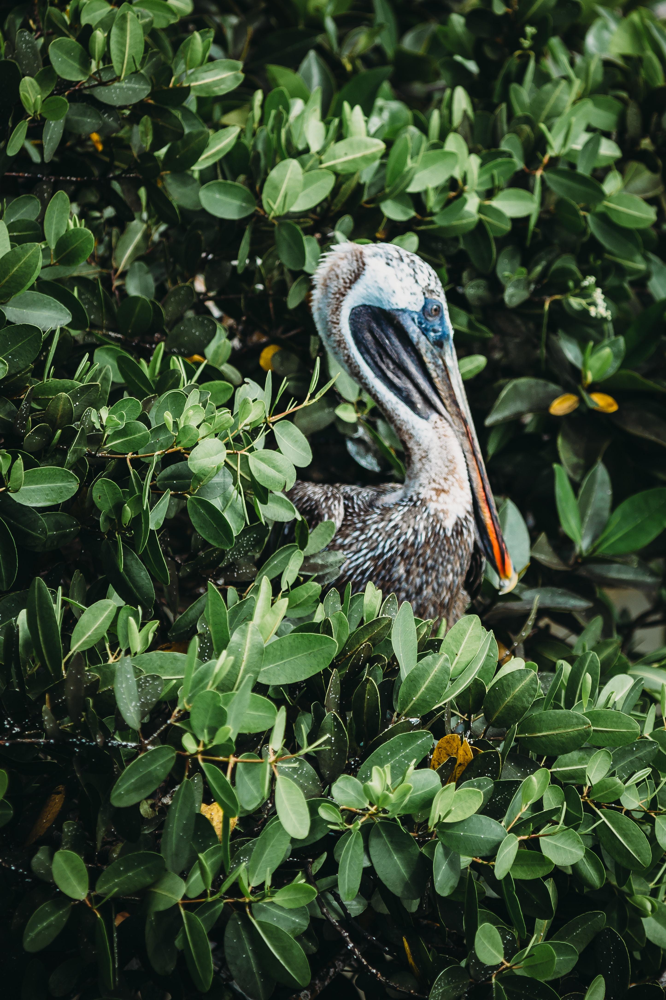

Exploration
des Galapagos

Partez pour une aventure inoubliable de 8 jours et 7 nuits dans les îles Galapagos. Vous explorerez les paysages uniques, la faune et la flore fascinante de cet archipel mythique. Profitez de l'expérience de nos guides locaux pour découvrir les secrets de cet environnement unique.
a partir de
3500€
Inclus dans le tarif
- Transferts aéroport inclus
- Hébergement à bord d'un yacht tout confort pendant 7 nuits
- Tous les repas inclus (petit déjeuner, déjeuner et dîner)
- Guide naturaliste local anglophone
- Toutes les activités mentionnées dans l'itinéraire
- Entrées aux parcs nationaux et aux sites visités
- Équipement de snorkeling



Visite de la réserve naturelle d'El Chato, observation des tortues
géantes,
observation des iguanes marins et des fous à pieds bleus et bien
d’autres activités vous attendent...